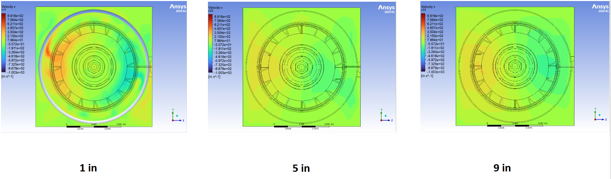
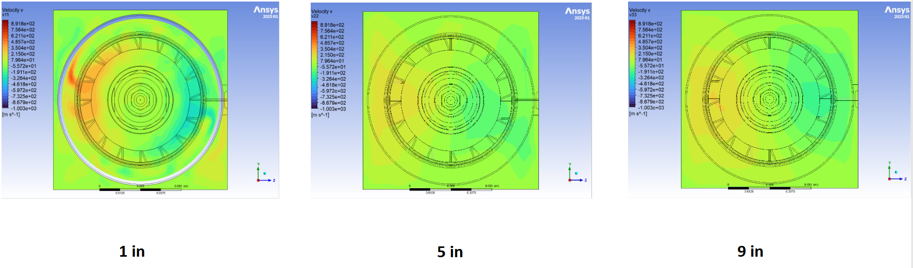

Education

Purdue University
B.S. in Aeronautical & Astronautical Engineering, Propulsion Specialization
Minor in Mathematics
Relevant Coursework: Aeromechanics, Thermodynamics, Ordinary and Partial Differential Equations, Linear Algebra, Multivariable Calculus, Introduction to Aerospace Engineering, Graphical Communication & Spatial Analysis, Electricity & Magnetism
Organizations & Awards
- Purdue Space Program: Design & Manufacturing Engineer
- Bechtel Innovation and Design Center: Mealshop Peer Mentor
- Terrence R. Meyer Research Group: Undergraduate Research Assistant
Eastlake High School
High School Diploma
Organizations & Awards
- FRC Robotics: Design Lead, Project Manager, 2x event winner
- Washington State Seal of Billiteracy
My Work
Rocket Propulsion Systems
At Rocket Propulsion Systems (RPS), I was the 6th ever employee working as a Manufacturing Engineer Intern, where I supported the early stage R&D, and manufacturing efforts of liquid rocket propulsion hardware for a suborbital rocket and an orbital transfer vehicle, owning end to end fabrication and inspection of parts, and helping with the refinement and standardisation of manufacturing processes, tooling and documentation. Working in a rigorous, fast-paced startup environment, supporting rapid iteration and hardware delivery while collaborating with deisgn and analysis teams to translate CAD into manufacturable hardware gave me valueable indsutry experience I look forward to using throughout my career
A hotfire of RPS's TCA
Phoenix
A pintle injector based ethalox heatsink engine. I assisted in the design of the engine and led the full in-house manufacturing of a pintle based methalox heatsink thrust chamber assembly (TCA) used for test cell validation, representing the first complete TCA I owned from design through hot-fire. The engine was revised to interface with a new test stand and once successfully hot-fired, will increase the team's testing capability up to 2500 lbf of thrust and establish a repeatable pipeline from design to test.

Phoenix Thrust Chamber Assembly Exploded View


Copperhead- Pumps
I worked on the Copperhead pump-fed propulsion system, the team’s and the worlds first collegiate pump-fed rocket, focusing on the manufacturing of the test pump hardware. All test pump components were traditionally machined in-house, while flight pumps will be additively manufactured and post-machined. I also supported the manufacturing of a custom pump test rig to enable standalone validation of pump performance prior to engine integration.

Impeller Iterations and Testing Volute


Ostrich
I contributed to the design and led the traditional manufacturing of Ostrich- the test version for the team's first regeneratively cooled engine Ouroborus. Ostrich is a 400 lbf thrust chamber used to validate internal sizing and regenerative cooling analysis tools. The chamber uses a clamshell architecture to simplify manufacturing and inspection, serving as a critical step in de-risking the full Copperhead propulsion system.

Ostrich Traditionally Manufactured Regen Chamber


Dual Swirl Injector
I helped design, analyze using CFD, and manufacture a modular dual swirl injector based on the GE TAPS III injector used in the GE9X engine to test the combustion of ammonia based fuels for greener aviation, allowing for rapid iterating of designs to find the most optimal injector design that would produce the least amount of emissions.

Swirler Cross-Section With Flowpaths


 

FRC Robotics Mentor
Following four years and multiple lead positions in the program, I serve as a mentor for an FRC robotics team, supporting students across mechanical design, manufacturing, system integration and strategy during the build season. I guided design reviews, manufacturing workflows, and hands-on fabrication while helping students translate CAD into reliable, competition-ready hardware under tight deadlines. The role emphasized technical leadership, communication, and enabling student ownership rather than direct execution.

2024 FRC Competition Robot CAD
Tools I Use
About Me
I’m an aerospace engineering student who enjoys building and testing real hardware, especially in propulsion and high-performance mechanical systems. I gravitate toward roles where I can own parts from design through manufacturing and validation, and I value fast iteration, clear communication, and practical engineering.
My Resume Manufacturing Portfolio